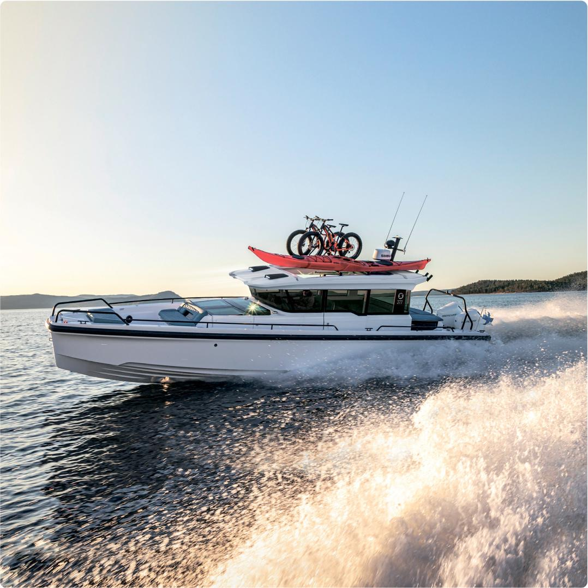

«SLIDER 377 SC меняет представления о лодках с каютами!»
Верфь SLIDER · о модели 377
«Катер с актуальным современным дизайном, универсальностью и потрясающими эксплуатационными характеристиками.»
«Универсальность - главная черта»
Отзывов владельцев 377 на сайте верфи пока нет. Орфография и пунктуация сохранены.

Slider 377 на ходуЦена, моторы и комплектация 377 — по запросу.
Оставить заявкуСтраница Slider 377: характеристики и конфигуратор.
Открыть